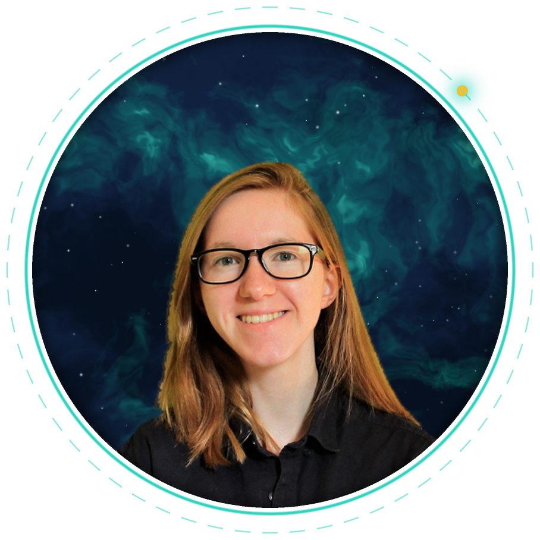

I am a PhD student at the Institute of Astronomy, University of Cambridge.
I study protoplanetary discs — large discs of gas and dust surrounding young stars, in which planets form.
My research focuses on young, massive discs that are susceptible to gravitational instability (GI). I use hydrodynamic simulations to model these systems and understand the behaviour of gas and dust within them.
